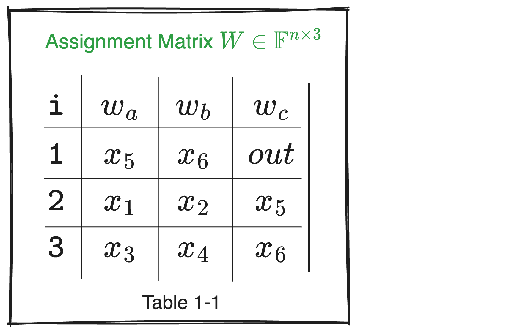
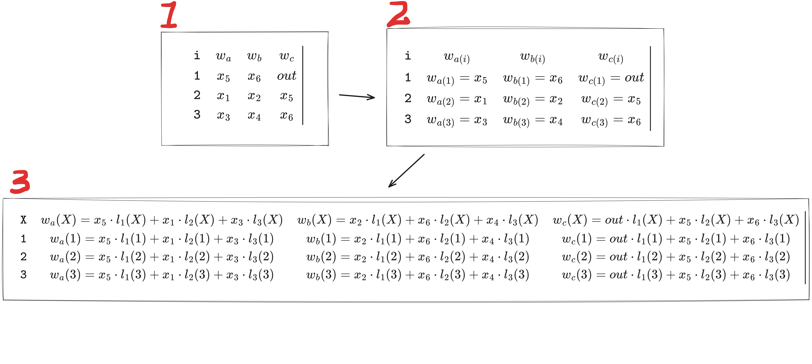

Introduction
In the previous article, we mentioned that to implement the protocol verification process, the Prover initially encodes each column of the $W$ table using polynomial coding and sends the encoded results to the Verifier for verification. Through further interaction, we can verify whether the equation
$$ q_{L}(X) \cdot w_{a}(X) + q_{R}(X) \cdot w_{b}(X) + q_{M}(X)\cdot(w_{a}(X)\cdot w_{b}(X)) + q_{C}(X) - q_{O}(X)\cdot w_{c}(X) \overset{?}{=} 0 $$
holds.
This verifies the correctness of a circuit only when the Prover is honest. However, the Prover might misbehave. To prevent this and ensure the circuit’s correctness and security while satisfying constraints, we need to verify the relationship between $(\sigma_a(X),\sigma_b(X),\sigma_c(X))$ and $(w_a(X),w_b(X),w_c(X))$.
Where:
$(\sigma_a(X),\sigma_b(X),\sigma_c(X))$ are permutation polynomials used to describe copy constraints between variables at different positions in the circuit, ensuring consistency of variables (whether inputs or intermediate results) across different locations.
Let’s review how permutation polynomials work as discussed in the previous section:
Assume the circuit has three columns $w_a,w_b,w_c$, each row in these columns might represent a value of a variable. The permutation polynomials $\sigma_a(X),\sigma_b(X),\sigma_c(X)$ describe the mapping relationships between variables in the columns, ensuring that the same variable has the same value in different positions.
For example, if variable $x$ appears in the third row of the first column and the fifth row of the second column, the permutation polynomial ensures these two positions have equal values.
Now, $(w_a(X),w_b(X),w_c(X))$ are polynomials representing the input and output values for each gate in the circuit, defining specific assignments for each gate’s left input, right input, and output.
Simply put, the verification process ultimately converts circuit correctness checks into a set of polynomial constraints involving addition and multiplication.
Why do this? It’s to improve efficiency and reduce costs.
First,
Using the matrix $W$ table form “able 1-1” from “Plonkish Arithmetization” as an example, it follows the principle of vertical encoding, meaning each column can be represented by a polynomial to describe the calculation rules for the contents under that column.
Currently, there are only three columns, so even checking row by row doesn’t take much time. However, if the number of rows increases to 100, checking each row becomes labor-intensive, requiring significant computational power from the Verifier.
Therefore, encoding the three columns with one or several polynomials can transform a 3×100 table into 3 polynomials. (This is similar to understanding Excel spreadsheet formulas.)

Secondly, transforming into polynomials offers an inherent advantage. If the matrix $W$ table can be successfully represented by polynomials, the Verifier doesn’t need to verify all points in the domain to confirm the circuit’s correctness.
Specifically:
- Assume the circuit constraints can be represented as a 3×100 table, with each row representing a constraint.
- Using polynomial encoding, compress this 3×100 table into three polynomials $w_a(X),w_b(X),w_c(X)$. These polynomials can be constructed from the original points using methods like Lagrange interpolation.
- The Verifier only needs to check if these three polynomials satisfy the constraint at a random point $X=z$. Specifically, if the circuit needs to satisfy $w_a(X)⋅w_b(X)=w_c(X)$, the Verifier can check:
$$ w_a(z)⋅w_b(z)=w_c(z) $$
If this equation holds at the random point $X=z$, it can be assumed with high probability that the contents of the 3×100 table hold across the entire domain.
Let’s revisit the example to see the calculation process:
Using “Table 1-1” as an example, currently the table is only 3×3. The indices $i$ and their corresponding interpolation points are as follows:
- Indices: $i = 1,2,3$
- Interpolation points:
- $w_a$: $x_5,x_1,x_3$
- $w_b$: $x_6,x_2,x_4$
- $w_c$: $out,x_5,x_6$
Next, we begin constructing the Lagrange basis functions:
For each $i$, the Lagrange basis function ${l_i}{(X)}$ is defined as:
$$ {l_i}{(X)}=\prod_{j\neq i}^{} \frac{X-j}{i-j} $$
For the interpolation points: $\omega_i$, compute ${l_1}{(X)},{l_2}{(X)},{l_3}{(X)}$:
Note that $\omega$ and $w$ represent different meanings. When representing interpolation points, we usually use $\omega_i$, especially in polynomial interpolation or FFT (Fast Fourier Transform) scenarios; $w$ typically denotes witness, which may refer to different parts or variables of the witness, provided by the prover and unrelated to interpolation nodes.
${\textstyle \prod_{j\ne i}^{}}$ calculates the product for all $j \ne i$. For example,
- For $i = 1$, $j$ takes 2 and 3,
$$ {l_1}{(X)}=\frac{(X-2)(X-3)}{(1-2)(1-3)} =\frac{(X-2)(X-3)}{2} $$
- For $i = 2$, $j$ takes 1 and 3,
$$ {l_2}{(X)}=\frac{(X-1)(X-3)}{(2-1)(2-3)} = -(X-1)(X-3) $$
- For $i = 3$, $j$ takes 1 and 2,
$$ {l_3}{(X)}=\frac{(X-1)(X-2)}{(3-1)(3-2)} =\frac{(X-1)(X-2)}{2} $$
Next, using the content from “Table 1-1” and the Lagrange basis functions computed above for each $i$, we start constructing the interpolation polynomials $w_a(X)$, $w_b(X)$, $w_c(X)$:
For $w_a$:
$$ w_a(X)=x_5 \cdot l_1(X)+x_1 \cdot l_2(X) +x_3 \cdot l_3(X) $$
Substitute ${l_1}(X)$, ${l_2}(X)$, ${l_3}(X)$:
$$ \begin{split} w_a(X) & = x_5 \cdot l_1(X)+x_1 \cdot l_2(X) +x_3 \cdot l_3(X) & \ & = x_5 \cdot \frac{(X-2)(X-3)}{2} - x_1 \cdot(X-1)(X-3)+x_3 \cdot\frac{(X-1)(X-2)}{2} \end{split} $$
For $w_b$:
$$ w_b(X)=x_6 \cdot l_1(X)+x_2 \cdot l_2(X) +x_4 \cdot l_3(X) $$
Substitute ${l_1}(X)$, ${l_2}(X)$, ${l_3}(X)$:
$$ \begin{split} w_b(X) & = x_6 \cdot l_1(X)+x_2 \cdot l_2(X) +x_4 \cdot l_3(X)\ & = x_6 \cdot \frac{(X-2)(X-3)}{2} - x_2 \cdot (X-1)(X-3) +x_4 \cdot \frac{(X-1)(X-2)}{2} \end{split} $$
For $w_c$:
$$ w_c(X)=out \cdot l_1(X)+x_5 \cdot l_2(X) +x_6 \cdot l_3(X) $$
Substitute ${l_1}(X)$, ${l_2}(X)$, ${l_3}(X)$:
$$ \begin{split} w_c(X) & = out \cdot l_1(X)+x_5 \cdot l_2(X) +x_6 \cdot l_3(X)\ & = out \cdot \frac{(X-2)(X-3)}{2} - x_5 \cdot (X-1)(X-3) +x_6 \cdot \frac{(X-1)(X-2)}{2} \end{split} $$
After constructing the interpolation polynomials, if you want to check whether the resulting $w_a(X)$, $w_b(X)$, $w_c(X)$ correspond to the values in the table, you can verify by substituting values of $X$. For example, for $w_c(X)$:
- When $X=1$, check if $w_c(1) \overset{?}{=} out$:
$$ \begin{split} w_c(1) & = out \cdot \frac{(1-2)(1-3)}{2} - x_5 \cdot (1-1)(1-3) +x_6 \cdot \frac{(1-1)(1-2)}{2} \ & = out \end{split} $$
- When $X=2$, check if $w_c(2) \overset{?}{=} x_5$:
$$ \begin{split} w_c(2) & = out \cdot \frac{(2-2)(2-3)}{2} - x_5 \cdot (2-1)(2-3) +x_6 \cdot \frac{(2-1)(2-2)}{2} \ & = x_5 \end{split} $$
- When $X=3$, check if $w_c(3) \overset{?}{=} x_6$:
$$ \begin{split} w_c(3) & = out \cdot \frac{(3-2)(3-3)}{2} - x_5 \cdot (3-1)(3-3) +x_6 \cdot \frac{(3-1)(3-2)}{2} \ & = x_6 \end{split} $$
You can similarly verify $w_a(X)$ and $w_b(X)$.
If verification passes, it confirms the calculations are correct, and the preliminary work is complete.
In summary, all the above essentially involves constructing interpolation polynomials $w_a(X)$ based on known relationships in “Table 1”. “Table 2” illustrates the substitution process, while “Table 3” shows the interpolation polynomials $w_a(X)$ constructed from the interpolation $i=\{1,2,3\}$.

In “Table 1”, the domain is $i\in \{1,2,3\}$, which becomes clearer in “Table 2”. Once the interpolation polynomial $w_a(X)$ is constructed in “Table 3”, the range of values that the variable $X$ can take is no longer limited to the original $\{1,2,3\}$, and can be extended to the finite field $\mathbb{F}$.
We constructed the Lagrange interpolation polynomial in “3” with the existing three interpolation points. With it, we can substitute unknown points for numerical computation to verify if $w_a(X)\cdot w_b(X)=w_c(X)$. If a randomly selected $X$ from $\mathbb{F}$ satisfies $w_a(X)\cdot w_b(X)=w_c(X)$, and if $\mathbb{F}$ is sufficiently large, it can prove with high probability that the Prover did not cheat. How is this ensured? This is where the Schwartz-Zippel lemma comes in.
Probabilistic Check of Polynomials
If you understood the introduction, the following content will be easy to grasp.
In many cryptographic protocols and verification processes of complex computations, circuits (Boolean or algebraic) are used to describe and implement computational logic. Verifying the correctness of these computations is crucial, but directly verifying each computation step is usually impractical due to high computational costs. The Schwartz-Zippel lemma offers an efficient probabilistic verification method.
What is the Schwartz-Zippel lemma?
By introducing random challenge values, we can merge multiple conditions needing individual verification into a simplified verification step. This method leverages the theory of “random polynomial challenges”, meaning that by verifying a polynomial’s value at a random point, one can, with high probability, determine the equality of two polynomials over the entire domain.
Specifically, if there are two polynomials $f(X)$ and $g(X)$, both of degree not exceeding $d$, the Verifier only needs to provide a random challenge value $\zeta \in \mathbb{F}$ and check if $f(\zeta) = g(\zeta)$. This can determine with high probability that $f(X) = g(X)$, with an error probability $\leq \frac{d}{|\mathbb{F}|}$. As long as $\mathbb{F}$ is large enough, the probability of a check failing can be ignored.
This principle is known as the Schwartz-Zippel lemma.
Suppose you want to verify two vectors $\vec{a} + \vec{b} \overset{?}{=} \vec{c}$. To enable verification in one step, we first encode the three vectors into polynomials.
How to encode vectors into polynomials?
One straightforward method is to treat vectors as “coefficients” of polynomials:
Assume:
$$ \begin{split} \vec{a} = [a_0, a_1, \ldots, a_{N-1}]\ \vec{b} = [b_0, b_1, \ldots, b_{N-1}]\ \vec{c} = [c_0, c_1, \ldots, c_{N-1}] \end{split} $$
Then,
$$ \begin{split} a(X) &= a_0 + a_1X+a_2X^2 + \cdots + a_{n-1}X^{n-1}\ b(X) &= b_0 + b_1X+b_2X^2 + \cdots + b_{n-1}X^{n-1}\ c(X) &= c_0 + c_1X+c_2X^2 + \cdots + c_{n-1}X^{n-1} \end{split} $$
Clearly, if $a_i+ b_i = c_i$, then $a(X)+b(X)=c(X)$. Then, by challenging with a random number $\zeta$, we verify the three polynomials’ values at $X=\zeta$:
$$ a(\zeta)+b(\zeta)\overset{?}{=}c(\zeta) $$
If the equation holds, then $\vec{a} + \vec{b}=\vec{c}$.
Lagrange Interpolation and Evaluation Form
However, if we need to verify $\vec{a}\circ\vec{b} =\vec{c}$, (where $\circ$ denotes the Hadamard product, meaning component-wise multiplication of the vectors), using “coefficient encoding” becomes challenging. This is because $a(X)\cdot b(X)$ will generate many cross terms, with coefficients coming from various terms of different powers of $a(X)$ and $b(X)$.
Let’s calculate specifically, assume:
$$ \begin{split} a(X)=a_0 + a_1X+a_2X^2\ b(X)=b_0 + b_1X+b_2X^2\ c(X)=c_0 +c_1X+c_2X^2+c_3X^3+c_4X^4 \end{split} $$
Then
$$ \begin{align} a(X)\cdot b(X) & = (a_0 + a_1X+a_2X^2)\cdot(b_0 + b_1X+b_2X^2) & \ & = a_0b_0+(a_0b_1+b_0a_1)X+(a_0b_2+a_1b_1+a_2b_0)X^2+\cdots \end{align} $$
Observe that $a_i\cdot b_i$ and $c_i$ terms do not correspond to the $X^i$ coefficient. For instance, $a_1\cdot b_1$ contributes to the $X^2$ term, along with coefficients like $a_0b_2$ and $a_2b_0$. Meanwhile, $c_1$ is the coefficient of $X^1$.

Thus, we need another polynomial encoding scheme using the Lagrange Basis. If we want to construct a polynomial $a(X)$ such that it takes a specific set of values on $H=\{w_0, w_1, \ldots w_{N-1}\}$, assuming this set of values is $\vec{a}$, representing the polynomial $a(X)$ over a finite field $H$:
$$ \begin{split} a(w_0) &= a_0 \ a(w_1) &= a_1 \ &\vdots \ a(w_{N-1}) &= a_{N-1} \ \end{split} $$
Which means:
$$ \vec{a} = [a(w_0), a(w_1), \ldots, a(w_{N-1})] = [a_0, a_1, \ldots, a_{N-1}] $$
Constructing the interpolation polynomial requires the basis function set: ${L_i(X)}_{i\in[0,N-1]}$, where $L_i(w_i)=1$, and for $j\neq i$, $L_i(w_j)=0$.
Note: $w_i$ is an interpolation point, $w_i \in {H}$.
Then, the interpolation polynomial $a(X)$ can be expressed as a linear combination of the basis functions $L_i(X)$ and the corresponding value vector $\vec{a}$:
$$ a(X)=a_0\cdot L_0(X) + a_1\cdot L_1(X)+ a_2\cdot L_2(X) + \cdots + a_{N-1}\cdot L_{N-1}(X) $$
A more concrete example, suppose we want to construct an interpolation polynomial $a(X)$ such that it takes the values $\vec{a}=(a_0,a_1,a_2)=(4,5,6)$ over the domain $H’=\{1,2,3\}$.
This means we want to construct a polynomial $h(X)$ such that $h(1)=4$, $h(2)=5$, $h(3)=6$; that is, we have three known interpolation points $(1,4),(2,5),(3,6)$, from which we build the interpolation polynomial $h(X)$. Here, because $H’= \{1,2,3\}$, i.e., $X\in \{1,2,3\}$, $z_0=1, z_1=2, z_2=3$.
Note:
- $z_i$ denotes the x-coordinate of the interpolation points, i.e., interpolation nodes;
- The definition of the Lagrange basis function $L_i{(X)}$ is related to the order of interpolation points, not the specific order in the sequence. Therefore, even if you change the order of nodes in the list, as long as the node values themselves remain unchanged, the form of $L_i(X)$ will not change.
- As long as the interpolation points and the corresponding function values are consistent during calculation, the specific values of interpolation points will not affect the correctness of Lagrange interpolation. The key is to ensure that each interpolation point $w_i$ correctly corresponds to the function value at that point, and the form and result of the interpolation polynomial depend on these correspondences.
The Lagrange interpolation polynomial $h(X)$ can be expressed as:
$h(X)={\textstyle \sum_{i=0}^{N-1}} h_iL_i(X)$
1. Next, we calculate the Lagrange basis functions:
When $i=0$, i.e., at the interpolation node $z_0=1$:
$L_0(X)=\frac{(X-2)(X-3)}{(1-2)(1-3)}=\frac{(X-2)(X-3)}{2}$
When $i=1$, i.e., at the interpolation node $z_1=2$:
$L_1(X)=\frac{(X-1)(X-3)}{(2-1)(2-3)}=-(X-1)(X-3)$
When $i=2$, i.e., at the interpolation node $z_2=3$:
$L_2(X)=\frac{(X-1)(X-2)}{(3-1)(3-2)}=\frac{(X-1)(X-2)}{2}$
2. Constructing the interpolation polynomial $h(X)$:
Since at $z_0=1$, $h(z_0)=a(1)=4$, at $z_1=2$, $h(z_1)=a(2)=5$, at $z_2=3$, $h(z_2)=a(3)=6$,
We can use this relationship to construct the interpolation polynomial $h(X)$:
$$ \begin{align} h(X) & = 4L_0(X)+5L_1(X)+6L_2(X) & \ & = 4\cdot \frac{(X-2)(X-3)}{2}-5\cdot (X-1)(X_3)+6\cdot \frac{(X-1)(X-2)}{2} \ & = 2(X-2)(X-3)-5(X-1)(X-3)+3(X-1)(X-2)\ & = X+3 \end{align} $$
If $H$ is larger, for example, $H’’=\{1,2,3,4\}$, with $z’_i=\{0,1,2,3\}$, $\vec{a’}=(4,5,6,7)$. We can construct $h(X) = 4\cdot L_0{(X)}+ 5\cdot L_1{(X)} + 6\cdot L_2{(X)} + 7\cdot L_3{(X)}$. This is not calculated here, but the point is:
- As long as the interpolation points and corresponding function values are consistent during calculation, the specific values of interpolation points will not affect the correctness of Lagrange interpolation.
- When constructing interpolation polynomials, it is usually necessary to use all given interpolation points. This ensures that the polynomial accurately takes the corresponding value at each interpolation point. If only part of the interpolation points are used, the polynomial might not accurately pass through all points.
3. Verify the polynomial $h(X)$
We take $X=\{1,2,3\}$ and substitute it into the constructed interpolation polynomial $h(X)$ to see if the resulting values are as expected:
$$ \begin{align} a(1)=1+3=4\ a(2)=2+3=5\ a(3)=3+3=6 \end{align} $$
The verification results are consistent with the value vector $\vec{a}=(4,5,6)$. We constructed the polynomial $h(X)$ and verified its value at interpolation nodes is correct.
It seems that $L_i(X)$ acts like a selector, meaning:
When $X=w_i$, only $L_i(w_i)=1$, while all other $L_i(w_j) = 0 (j\neq i)$.
Note: Both $i$ and $j$ are indices in the set of interpolation nodes. The indices $i$ and $j$ are used to identify different interpolation nodes, but only at $i$ does the interpolation node value equal 1, while at $j$, the interpolation node value is 0. This duality—having values at interpolation nodes either as 0 or 1—is the selective property of Lagrange basis functions.
Now, returning to the step of constructing $a(X)$:
$$ a(X)=a_0\cdot L_0(X) + a_1\cdot L_1(X)+ a_2\cdot L_2(X) + \cdots + a_{N-1}\cdot L_{N-1}(X) $$
Using the same method, we can construct $b(X)$ and $c(X)$:
$$ \begin{split} b(X)=b_0\cdot L_0(X) + b_1\cdot L_1(X)+ b_2\cdot L_2(X) + \cdots + b_{N-1}\cdot L_{N-1}(X) \ c(X)=c_0\cdot L_0(X) + c_1\cdot L_1(X)+ c_2\cdot L_2(X) + \cdots + c_{N-1}\cdot L_{N-1}(X) \ \end{split} $$
If $\vec{a} \circ \vec{b} = \vec{c}$ is true at the nodes, this means at each node $w_i$, $a(w_i) \cdot b(w_i) = c(w_i)$. Since the interpolation polynomials match the given values at these nodes, and the polynomials’ form remains consistent between nodes, it follows that $a(X) \cdot b(X) = c(X)$ will also hold over the given domain $H$.
Let’s verify if $\vec{a} \circ \vec{b} = \vec{c}$, $a(X) \cdot b(X) \overset{?}{=} c(X), \quad \forall X\in H$.
The specific calculation process is:
$$ \begin{split} \vec{a} \circ \vec{b} & = \vec{c}\ [a_0, a_1, \ldots, a_{N-1}] \circ [b_0, b_1, \ldots, b_{N-1}] & =[c_o,c_1, \ldots,c_{N-1}]\ [a_0 \cdot b_0 , a_1\cdot b_1 , a_2\cdot b_2 \ldots ,a_{N-1}\cdot b_{N-1}]&=[c_o,c_1,\ldots,c_{N-1}] \end{split} $$
Clearly, in the above equation, $a_0 \cdot b_0=c_0$, $a_1 \cdot b_1=c_1$, $\ldots$, $a_{N-1} \cdot b_{N-1} = c_{N-1}$.
Therefore, $a_i \cdot b_i =c_i$, which implies $a(w_i)\cdot b(w_i) =c(w_i)$, $a(X)\cdot b(X)=c(X), \quad \forall X\in H$.
We’ve now translated the element-wise multiplication problem of two vectors into the relationship between three polynomials. The next question is how to perform a random challenge verification.
We realize that if the Verifier directly sends a random number $\zeta$ to challenge the equation above, $\zeta$ can only belong to $H$. If there exists only one $j$ such that $a_j\cdot b_j\neq c_j$, the probability of the Verifier’s challenge detecting this error is only $\frac{1}{N}$. Thus the Verifier needs to challenge multiple times to reduce the probability of missing an error. However, this doesn’t meet our requirement; we hope to detect Prover’s cheating with a single challenge.
We can change the range of $X$ in the equation above by using the following equation:
$$ a(X)\cdot b(X) - c(X) = q(X)\cdot z_H(X), \quad\forall X\in \mathbb{F} $$
This equation holds over the entire domain $\mathbb{F}$. Why is this?
First, consider the left-hand polynomial: $a(X)\cdot b(X)-c(X)$, let’s define it as $f(X)$.
We can see that $f(X)$ equals zero over $X\in H$, meaning $H$ is exactly the “root set” of $f(X)$. Therefore, $f(X)$ can be expressed as the product of the vanishing polynomial $z_H(X)$ and a quotient polynomial $q(X)$. We can use the known properties of $z_H(X)$ to simplify the problem handling. Thus, $f(X)$ can be factored as follows:
$$ f(X)=(X-w_0)(X-w_1)(X-w_2)\cdots(X-w_{N-1})\cdot q(X) $$
In other words, $f(X)$ can be divided by the polynomial $z_H(X)=(X-w_0)(X-w_1)(X-w_2)\cdots(X-w_{N-1})$, resulting in a quotient polynomial $q(X)$, representing the result of dividing $f(X)$ by $z_H(X)$. The vanishing polynomial $z_H(X)$ is also known as the Vanishing Polynomial, capturing all roots of $f(X)$.
Note:
- $H = \{w_0, w_1, \ldots, w_{N-1}\}$ is the set of interpolation nodes. The vanish polynomial $Z_H(X)$ is a polynomial whose roots are all nodes in the set $H$.
- The right $z_H(X)$ is a node polynomial, meaning this polynomial $z_H(X)$ has roots at all interpolation nodes $w_{i}$, i.e., for all $w_i\in H$, $Z_H(w_i)=0$. This polynomial can be defined as: $z_H(X)=(X-w_0)(X-w_1)(X-w_2)\cdots(X-w_{n-1})$.
- Definition of polynomial divisibility: Suppose there are two polynomials $A(X)$ and $B(X)$. If there exists a polynomial $Q(X)$ such that $A(X)=B(X)\cdot Q(X)$, then we say polynomial $A(X)$ is divisible by $B(X)$, or $B(X)$ is a factor of $A(X)$.
If we let the Prover calculate this $Q(X)$ and send it to the Verifier, and since $H$ is a known system parameter, the Verifier can compute $z_H(X)$ itself. Then the Verifier only needs a single random check to determine if $a(X)\cdot b(X)-c(X)$ equals zero at $H$, based on the Schwartz-Zippel lemma.
If $P(X)=a(X)\cdot b(X)-c(X)$ is a non-zero polynomial, assuming its degree is $d$, then the probability of a randomly chosen number yielding a result of zero $\le \frac{d}{|F|}$, where $F$ is the finite field. Provided $F$ is large enough, the probability of the result being 0 is negligible.
In simple terms, the probability that the polynomial equals 0 is already less than a very very small probability, roughly equivalent to it being impossible to randomly select that “lucky number” that coincidentally equals 0. We can then confidently conclude it’s the vanishing polynomial.
$$ a(\zeta)\cdot b(\zeta)-c(\zeta) \overset{?}{=} q(\zeta)\cdot z_H(\zeta) $$
Moreover, if we use Polynomial Commitment, the Verifier can let the Prover calculate the values of these polynomials at $X=\zeta$ and generate a proof to confirm the correctness of the values. For the Verifier, it only needs to check this proof’s validity by randomly choosing a number, rather than calculating the polynomial values itself, thereby minimizing the Verifier’s workload.
However, the Verifier’s calculation of $z_H(\zeta)$ requires $O(n)$ computation, as it involves n multiplication operations.
Supplement: In computational complexity, $O(n)$ indicates that as the input size $n$ increases, the algorithm’s running time or required resources (such as calculation steps) will increase linearly. In simple terms, if an algorithm is $O(n)$, doubling the input data will double the algorithm’s running time.
Can the Verifier further reduce workload? The answer is yes, by choosing a special $H\subset \mathbb{F}$, specifically if $H$ is a well-structured set, enabling efficient computation of the vanishing polynomial $z_H(X)$ and its values using fast Fourier transform (FFT) algorithms.
Roots of Unity
If we choose roots of unity as $H$, the computation of $z_H(\zeta)$ reduces to $O(\log{n})$.
For any finite field $\mathbb{F}_p=\{0,1,\ldots,p-1\}$, where the order $p$ is a prime. Removing zero, the remaining elements form a multiplicative group $\mathbb{F}_p^\ast=\{1,\ldots,p-1\}$ of order $p-1$. Since $p-1$ is even, its prime factorization includes several 2s, noted as $\lambda$ 2s. Thus, $\mathbb{F}_p^\ast$ contains a multiplicative subgroup of order $2^\lambda$. Let $N=2^{k}, k\leq\lambda$, then there must exist a multiplicative subgroup of order $N$, denoted as $H$. This subgroup necessarily has a generator, denoted as $\omega$, with $\omega^N=1$. This is akin to taking the $N$th root of 1, hence called a root of unity. However, there isn’t just one $\omega$, as $\omega^2,\omega^3,\ldots,\omega^{N-1}$ all satisfy the property of roots of unity, i.e., $(\omega^k)^N=1, k\in(2,3,\ldots,N-1)$. All these roots of unity generated by $\omega$ form the multiplicative subgroup $H$:
$$ H=(1,\omega,\omega^2,\omega^3,\ldots,\omega^{N-1}) $$
Note: $\omega = e^{2\pi i / N}$. This expression reveals some patterns.
These elements satisfy certain symmetries: for example, $\omega^{\frac{N}{2}} = e^{2\pi i \cdot \frac{N/2}{N}} = e^{\pi i} = -1$,
From $\omega^{\frac{N}{2}} = -1$, we have $\omega^{\frac{N}{2} + 1} = \omega \cdot \omega^{\frac{N}{2}} = \omega \cdot (-1) = -\omega$. Hence, $\omega = -\omega^{\frac{N}{2} + 1}$.
For any exponent $i$, $\omega^{\frac{N}{2}} = -1$. Thus $\omega^{\frac{N}{2} + i} = \omega^{\frac{N}{2}} \cdot \omega^i = (-1) \cdot \omega^i = -\omega^i$.
Moreover, summing all the roots of unity yields zero:
$$ \sum_{i=0}^{N-1}\omega^i=0 $$
A simple example: we can find a subgroup of order 4 in $\mathbb{F}_{13}$.
$$ \mathbb{F}_{13}=\{0,1,2,3,4,5,6,7,8,9,10,11,12\} $$
The generator of the multiplicative group is given as $g=2$. Since $13-1=3 \times 2 \times 2$, there exists a multiplicative subgroup of order 4 with generator $\omega=5$:
If $g$ is a generator of $\mathbb{F}_p^\ast$, then $g^{p-1}=1$, and $\mathbb{F}_p^\ast = {g^0,g^1,\ldots,g^{p-2}}$
$$ H={\omega^0=1,\omega^1=5,\omega^2=12,\omega^3=8} $$
And $\omega^4=1=\omega^0$.
In practical applications, we choose a larger finite field that can have a large powers-of-2 multiplicative subgroup. For example, the scalar field of the elliptic curve BN254 contains a multiplicative subgroup of order $2^{28}$, and BLS-12-381 contains a subgroup of order $2^{32}$.
On the multiplicative subgroup $H$, the following property holds:
$$ z_H(X)=\prod_{i=0}^{N-1}(X-\omega^i)=X^N-1 $$
We can simply derive, assuming $N = 4$. Due to the symmetry of $\omega^i$, $\omega^4=1$ means $\omega$ could be (1,i,-1,-i). This calculation process can be continuously simplified:
How to understand the symmetry of $\omega^i$? $\omega_i \times \omega^{N-i}=1$ (mutual inverses); $\omega^N=1$ ensures they are periodic on the unit circle (repeat every $N$).
$$ \begin{split} &(X-\omega^0)(X-\omega^1)(X-\omega^2)(X-\omega^3) \ =& (X-1)(X-i)(X+1)(X+i) \ =& (X^2-1)(X^2+1) \ =& (X^4-1) \ \end{split} $$
Lagrange Basis
For the Lagrange polynomial, $L_i(\omega_i)=1$, and $L_i(\omega_j)=0, (j\neq i)$. Next, we give the construction of $L_i(X)$.
To construct $L_i(X)$, first construct the non-zero polynomial part. Since $L_i(\omega_j)=1, j = i$, it must contain the polynomial factor $\prod_{j,j\neq i}(X-\omega_j)$. However, this factor may not equal 1 at $X=\omega_i$, i.e., $\prod_{j, j\neq i}(\omega_i-\omega_j)\neq 1$. Then, we just need to divide this factor by this potentially non-1 value, thus $L_i(X)$ is defined as:
$$ L_i(X) = \frac{\prod_{j\in H\backslash{i}}(X-\omega_j)}{\prod_{j\in H\backslash{i}}(\omega_i-\omega_j)} = \prod_{j\in H\backslash{i}}^{} \frac{X-\omega_j}{\omega_i-\omega_j} $$
It is easy to find that $L_i(X)$ equals 1 at $X=\omega_i$ and equals 0 at other locations $X=\omega_j, j\neq i$.
For any polynomial $f(X)$ of degree less than $N$, it can be uniquely expressed as:
$$ f(X)=a_0\cdot L_0(X)+a_1\cdot L_1(X)+a_2\cdot L_2(X)+ \cdots + a_{N-1}\cdot L_{N-1}(X) $$
We can represent $f(X)$ by its values on $H$ as $(a_0,a_1,a_2,\ldots,a_{N-1})$. This is called the evaluation form of the polynomial, as different to the coefficient form.
The two forms can be converted on $H$ using the (Inverse) Fast Fourier Transform algorithm with a computational complexity of $O(N\log{N})$.
Polynomial Constraints
Using the Lagrange basis, we can easily impose constraints on various vector calculations.
For example, if we want to constrain the first element of the vector $\vec{a}=(h,a_1,a_2,\ldots,a_{N-1})$ to be $h$, we can encode this vector to get $a(X)$ and impose the following constraint:
$$ L_0(X)(a(X)-h) = 0, \quad \forall X\in H $$
The verifier can challenge the following polynomial equation:
$$ L_0(X)(a(X)-h) = q(X)\cdot z_H(X) $$
For instance, if we want to constrain the first element of $\vec{a}=(h_1,a_1,a_2,\ldots,a_{N-2},h_2)$ to be $h_1$, and the last element to be $h_2$, with other elements arbitrary, then $a(X)$ should satisfy the following two constraints:
$$ \begin{split} L_0(X)\cdot (a(X)-h_1) &= 0, \quad \forall X\in H\ L_{N-1}(X)\cdot(a(X)-h_2) &= 0, \quad \forall X\in H \end{split} $$
Through a random challenge number ( $\alpha$ ) given by the verifier, the above two constraints can be merged into one polynomial constraint:
$$ L_0(X)\cdot (a(X)-h_1) + \alpha\cdot L_{n-1}(X)\cdot(a(X)-h_2) = 0, \quad \forall X\in H $$
Next, verifier only needs to challenge the following polynomial equation:
$$ L_0(X)\cdot (a(X)-h_1) + \alpha\cdot L_{n-1}(X)\cdot(a(X)-h_2) = q(X)\cdot z_H(X) $$
If we want to verify that two vectors $\vec{a}$ and $\vec{b}$ of equal length have the same elements except for the first, how to constrain them? Assuming $a(X)$ and $b(X)$ are the polynomial encodings of the two vectors, they should satisfy:
$$ (X-\omega^0)(a(X)-b(X))=0 $$
When $X=\omega^0$, the first factor on the left is 0, and when $X\in H\backslash{\omega^0}$, the second factor is 0, meaning all values must be equal except the first element.
It can be seen that using Lagrange polynomials, we can flexibly constrain relationships between multiple vectors and combine multiple constraints together, allowing the verifier to verify multiple vector constraints with only a few random challenges.
Coset
In the multiplicative group of a prime finite field, for each multiplicative subgroup $H$, there are multiple cosets of the same length. These cosets share similar properties with $H$ and are also used in PlonK. Here, we introduce some of their properties.
Taking $\mathbb{F}_{13}$ as an example, choose $H=\{1,5,12,8\}$, and the generator of the multiplicative group is $g=2$. We can obtain the following two cosets:
$$ \begin{split} H_1 &= g\cdot H = {g, g\omega, g\omega^2, g\omega^3} &= (2,10,11,3) \ H_2 &= g^2\cdot H = {g^2, g^2\omega, g^2\omega^2, g^2\omega^3} &= (4,7,9,6) \ \end{split} $$
It can be seen that $\mathbb{F}^*_{13}=H\cup H_1 \cup H_2$, and they have no overlap. Their Vanishing Polynomials can be quickly calculated:
$$ z_{H_1}(X)=X^N-g^N, \quad z_{H_2}(X)=X^N-g^{2N} $$
References
Schwartz–Zippel lemma: https://en.wikipedia.org/wiki/Schwartz%E2%80%93Zippel_lemma